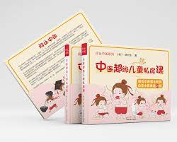

中醫超級兒童私房課  此書為作者網課資料整理，深入挖掘當下兒童群體常見疾病和養護問題。讀者對象主要為廣大年輕父母，圖書風格采取童書流行款式24開，方方正正，充滿童趣。書中內容基本來自臨床大數據反饋，主要采用經方、食療、小兒推拿為主的防治方法。小兒臟腑嬌嫩，對環境污染更為敏感，加之用藥喂食過度，各種長期慢性病及體質下降問題呈明顯上升趨勢，對此僅靠醫院有限的醫療資源是不夠的，對父母的適度培訓可以起到源頭控制的作用，其社會效益不可估量。